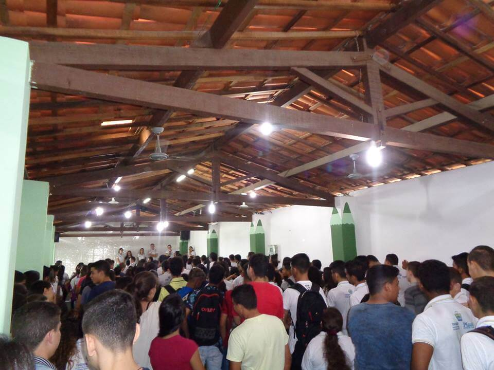

EVENTOS - FEVEREIRO/MARÇO
Início do ano letivo
O Centro Estadual De Tempo Integral José Alves Bezerra, no dia 18 de fevereiro, deu início ao seu ano letivo, desenvolvendo ao decorrer da semana diversas atividades, onde os alunos novatos e veteranos tiveram a oportunidade de interagir e assim ter conhecimento do que farão nos próximos meses dentro da instituição. Nestes dias a escola promoveu diversas atividades, tais como: escolha do líder de turma, apresentação da sistemática de avaliação, além de mostra a importância do Grêmio na vida estudantil do alunado, estimulando-os a participarem.
Ademais para finalizar a semana de interação com os alunos, ocorreu a primeira reunião com os pais, onde os mesmos ficaram cientes da importância de estar presente na vida estudantil dos mesmos, podendo acompanhar seu desenvolvimento e empenho juntamente com os docentes da instituição. Com isso, fica claro a importância da parceria de todos para mais um ano próspero, com muitas conquistas e realizações.
Um novo começo
Nos dias 18 à 23 de fevereiro, foi realizada a Semana Presente, com o tema Calourada da interação: Tudo pela interação, eu tenho valor e você também
, a mesma que utilizou de métodos inteligentes, para que os calouros do CETIJAB, fossem bem recebidos, estigando-os a se adaptarem a nova rotina escolar. E aos veteranos, um saudoso “bem-vindos novamente”. Durante esses dias foram apresentados todas as regras da instituição, bem como o regimento interno da escola a todos os alunos.
Avaliação do alunado
Dia 22/02, foi realizada a avaliação diagnóstica, esta avaliou os alunos na questão dos descritores de Língua Portuguesa e Matemática.
Transparência estudantil
Dia 11/03, aconteceu a eleição do Grêmio Estudantil, onde todos tiveram a oportunidade de votar.
As chapas se saíram muito bem, houve apenas 25 votos de diferença para a chapa vencedora, esta que é composta pelos alunos Yara Kayame, Tamires Oliveira, Ernandes Sousa e Ana Joyce, com a chapa "TRANSPARÊNCIA ESTUDANTIL: O FUTURO É AGORA" ganharam a eleição, receberam a posse e escolheram os seus respectivos secretários, tendo assim a oportunidade de fazer a democracia dentro da escola.